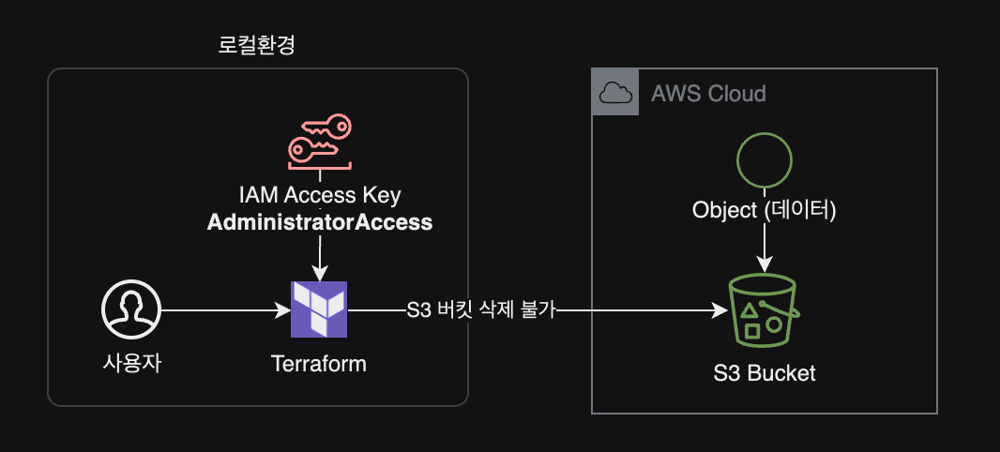
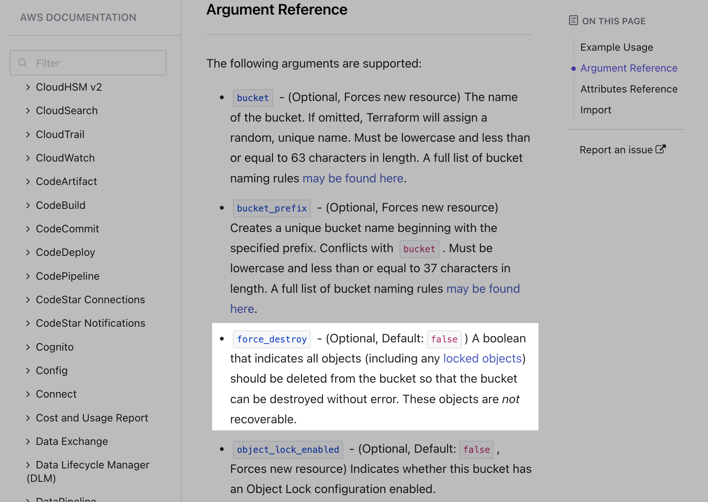
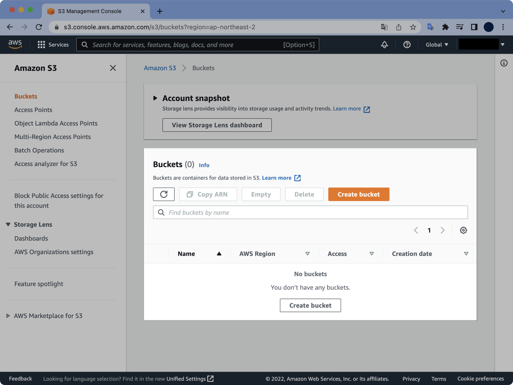

테라폼 S3 버킷 강제삭제
문제점
테라폼으로 생성한 버킷을 삭제하려고 할 때 내용물이 들어 있으면 테라폼으로 삭제되지 않습니다.

terraform destroy 실행 후 발생하는 에러 메세지는 다음과 같습니다.
$ terraform destroy
...
aws_iam_role.s3-mybucket-role: Destroying... [id=s3-mybucket-role]
aws_iam_role.s3-mybucket-role: Destruction complete after 0s
╷
│ Error: deleting S3 Bucket (mybucket-seyslee-terraform-training): BucketNotEmpty: The bucket you tried to delete is not empty
│ status code: 409, request id: NM7NS0KDN2YV6JG4, host id: 0M0e2q8n/aHzPgCqWJWo0/6WVOGEisA7WyA4smqB/9c4wyd8/ArZAbVT60BragCP7x+dWGB9Co8=
│
│
S3 안에 오브젝트(데이터)가 들어 있어서 버킷을 삭제할 수 없다는 에러 메세지입니다.
이 문서에서는 S3 버킷을 수작업으로 비울 필요 없이 테라폼만으로 버킷을 비우고 강제 삭제force destroy하는 방법을 소개합니다.
원인
테라폼으로 삭제하려고 하는 S3 버킷에 helloworld.txt라는 텍스트 파일 오브젝트가 들어있어서 삭제되지 않고 있습니다.
$ aws s3 ls s3://mybucket-seyslee-terraform-training/
2022-06-09 00:22:54 211 hello-world.txt
오브젝트들이 들어 있는 버킷을 테라폼으로 강제 삭제하는 방법에 대해 알아보겠습니다.
환경
로컬 환경
- Terraform v1.2.2 (brew로 설치)
- Provider : terraform-provider-aws_v4.17.1_x5
- AWS CLI 권한은 현재 AdministratorAccess 권한이 부여된 상태
해결방법
강제삭제 옵션force_destroy 사용
- 테라폼 파일을 수정합니다. S3 버킷의 강제 삭제 설정값을
false에서true로 변경합니다. - 변경사항을
terraform apply로 적용해서 테라폼 상태 파일.tfstate에 반영합니다. terraform destroy를 다시 실행합니다.- 안에 들어있는 오브젝트들과 함께 버킷이 삭제됩니다.
조치 전 주의사항
테라폼을 사용해서 강제로 삭제된 버킷은 다시 복구할 수 없다는 점을 명심하세요.
삭제 전에 꼭 지우려고 하는 대상 리소스가 맞는지 다시 한 번 확인하도록 합니다.
AWS 관리형 백업 서비스인 AWS Backup을 사용해서 S3 버킷을 백업해둔 경우는 데이터 복구가 가능합니다.
상세 조치방법
테라폼 코드 확인
S3 버킷이 선언된 테라폼 파일의 내용을 확인합니다.
$ cat s3.tf
resource "aws_s3_bucket" "b" {
bucket = "mybucket-seyslee-terraform-training"
tags = {
Name = "mybucket-seyslee-terraform-training"
ManagedBy = "terraform"
}
}
force_destroy 옵션 활성화
force_destroy는 필수 옵션은 아닌 optional한 값이며 테라폼 파일에서 따로 설정해주지 않으면 기본값인 false로 설정됩니다.

s3 버킷 resource의 force_destroy 값을 false에서 true로 변경합니다.
# s3.tf
resource "aws_s3_bucket" "b" {
bucket = "mybucket-seyslee-terraform-training"
- force_destroy = false
+ force_destroy = true
tags = {
Name = "mybucket-seyslee-terraform-training"
ManagedBy = "terraform"
}
}
테라폼 코드의 변경결과는 다음과 같습니다.
# s3.tf
resource "aws_s3_bucket" "b" {
bucket = "mybucket-seyslee-terraform-training"
force_destroy = true
tags = {
Name = "mybucket-seyslee-terraform-training"
ManagedBy = "terraform"
}
}
참고로 위 mybucket-seyslee-terraform-training 버킷은 이미 예전에 terraform apply로 생성했던 리소스입니다.
테라폼 명령어에서 -target 옵션을 사용하면 특정 리소스에만 플랜, 적용, 삭제를 할 수 있습니다.
# s3.tf
resource "aws_s3_bucket" "b" {
# ... 생략 ...
}
위 s3.tf 파일에서 버킷의 리소스 주소는 aws_s3_bucket.b 가 됩니다.
aws_s3_bucket.b 리소스의 force_destroy 옵션을 활성화하기 위해 terraform apply 합니다.
$ terraform apply -target aws_s3_bucket.b
aws_s3_bucket.b: Refreshing state... [id=mybucket-seyslee-terraform-training]
Terraform used the selected providers to generate the following execution plan.
Resource actions are indicated with the following symbols:
~ update in-place
Terraform will perform the following actions:
# aws_s3_bucket.b will be updated in-place
~ resource "aws_s3_bucket" "b" {
~ force_destroy = false -> true
id = "mybucket-seyslee-terraform-training"
tags = {
"ManagedBy" = "terraform"
"Name" = "mybucket-seyslee-terraform-training"
}
# (9 unchanged attributes hidden)
# (2 unchanged blocks hidden)
}
Plan: 0 to add, 1 to change, 0 to destroy.
╷
│ Warning: Resource targeting is in effect
│
│ You are creating a plan with the -target option, which means that the result of
│ this plan may not represent all of the changes requested by the current
│ configuration.
│
│ The -target option is not for routine use, and is provided only for exceptional
│ situations such as recovering from errors or mistakes, or when Terraform
│ specifically suggests to use it as part of an error message.
╵
Do you want to perform these actions?
Terraform will perform the actions described above.
Only 'yes' will be accepted to approve.
Enter a value: yes
aws_s3_bucket.b: Modifying... [id=mybucket-seyslee-terraform-training]
aws_s3_bucket.b: Modifications complete after 0s [id=mybucket-seyslee-terraform-training]
╷
│ Warning: Applied changes may be incomplete
│
│ The plan was created with the -target option in effect, so some changes requested
│ in the configuration may have been ignored and the output values may not be fully
│ updated. Run the following command to verify that no other changes are pending:
│ terraform plan
│
│ Note that the -target option is not suitable for routine use, and is provided only
│ for exceptional situations such as recovering from errors or mistakes, or when
│ Terraform specifically suggests to use it as part of an error message.
╵
Apply complete! Resources: 0 added, 1 changed, 0 destroyed.
변경사항이 1개 적용되었습니다.
force_destory 값이 false에서 true로 변경될 예정임을 미리 확인할 수 있습니다.
...
~ resource "aws_s3_bucket" "b" {
~ force_destroy = false -> true
...
현재 버킷의 force_destroy 값이 true이기 때문에 이제 삭제 명령어를 재시도합니다.
테라폼 삭제 명령어를 실행할 때에도 -target 옵션을 사용해서 문제가 발생했던 버킷에 한정해서 삭제를 진행할 수 있습니다.
$ terraform destroy -target aws_s3_bucket.b
aws_s3_bucket.b: Refreshing state... [id=mybucket-seyslee-terraform-training]
Terraform used the selected providers to generate the following execution plan.
Resource actions are indicated with the following symbols:
- destroy
Terraform will perform the following actions:
# aws_s3_bucket.b will be destroyed
- resource "aws_s3_bucket" "b" {
- arn = "arn:aws:s3:::mybucket-seyslee-terraform-training" -> null
- bucket = "mybucket-seyslee-terraform-training" -> null
- bucket_domain_name = "mybucket-seyslee-terraform-training.s3.amazonaws.com" -> null
- bucket_regional_domain_name = "mybucket-seyslee-terraform-training.s3.ap-northeast-2.amazonaws.com" -> null
- force_destroy = true -> null
- hosted_zone_id = "Z3W03O7B5YMIYP" -> null
- id = "mybucket-seyslee-terraform-training" -> null
- object_lock_enabled = false -> null
- region = "ap-northeast-2" -> null
- request_payer = "BucketOwner" -> null
- tags = {
- "ManagedBy" = "terraform"
- "Name" = "mybucket-seyslee-terraform-training"
} -> null
- tags_all = {
- "ManagedBy" = "terraform"
- "Name" = "mybucket-seyslee-terraform-training"
} -> null
- grant {
- id = "84a9142d6f4328db8f659834b9b87f22be5cdee2c61f0cd4da3a0f0dadefe959" -> null
- permissions = [
- "FULL_CONTROL",
] -> null
- type = "CanonicalUser" -> null
}
- versioning {
- enabled = false -> null
- mfa_delete = false -> null
}
}
Plan: 0 to add, 0 to change, 1 to destroy.
╷
│ Warning: Resource targeting is in effect
│
│ You are creating a plan with the -target option, which means that the result of
│ this plan may not represent all of the changes requested by the current
│ configuration.
│
│ The -target option is not for routine use, and is provided only for exceptional
│ situations such as recovering from errors or mistakes, or when Terraform
│ specifically suggests to use it as part of an error message.
╵
Do you really want to destroy all resources?
Terraform will destroy all your managed infrastructure, as shown above.
There is no undo. Only 'yes' will be accepted to confirm.
Enter a value: yes
aws_s3_bucket.b: Destroying... [id=mybucket-seyslee-terraform-training]
aws_s3_bucket.b: Destruction complete after 1s
╷
│ Warning: Applied changes may be incomplete
│
│ The plan was created with the -target option in effect, so some changes requested
│ in the configuration may have been ignored and the output values may not be fully
│ updated. Run the following command to verify that no other changes are pending:
│ terraform plan
│
│ Note that the -target option is not suitable for routine use, and is provided only
│ for exceptional situations such as recovering from errors or mistakes, or when
│ Terraform specifically suggests to use it as part of an error message.
╵
Destroy complete! Resources: 1 destroyed.
삭제가 안되던 S3 버킷이 삭제 완료되었습니다.
테라폼 상태파일 terraform.tfstate의 내용을 확인합니다.
$ cat terraform.tfstate
{
"version": 4,
"terraform_version": "1.2.2",
"serial": 126,
"lineage": "1e2c7869-b23e-3c00-6b89-e8096e5343ab",
"outputs": {},
"resources": []
}
테라폼 상태 파일 terraform.tfstate에서도 S3 리소스가 삭제되어 깔끔해졌습니다.
AWS Management Console에서 S3 버킷 목록을 조회합니다.

terraform destroy 명령어로 삭제할 수 없던 버킷이 삭제되어 없어진 걸 확인할 수 있습니다.
AWS CLI에서도 S3 버킷이 삭제된 걸 확인할 수 있습니다.
$ aws s3 ls s3://mybucket-seyslee-terraform-training/
An error occurred (NoSuchBucket) when calling the ListObjectsV2 operation: The specified bucket does not exist
존재하지 않는 버킷이라고 나옵니다.
이상으로 S3 버킷의 강제 삭제 조치를 완료했습니다.
참고자료
Terraform force_destroy
Terraform: Handling the deletion of a non-empty AWS S3 Bucket